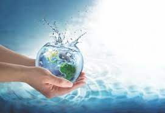

Water Conservation

What is water conservation?
Water conservation is the process of preserving and using water resources efficiently.
Why shoud we conserve water?
Water is necessary for human survival, and it is a finite resource.
Fun Facts About Water
- Ice is less dense than liquid water
- 97% of world’s water is salt water, 2% frozen in glaciers, only 1% can be used by humans